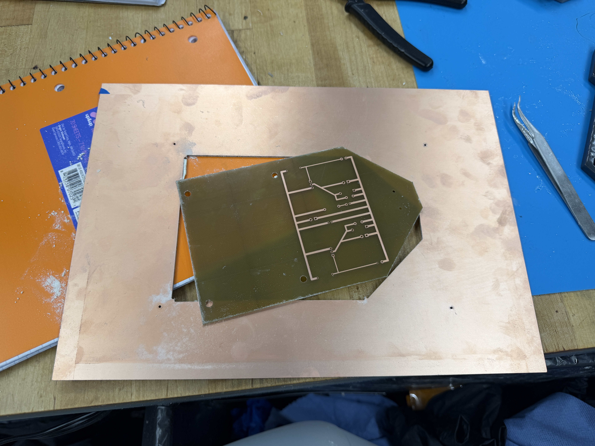
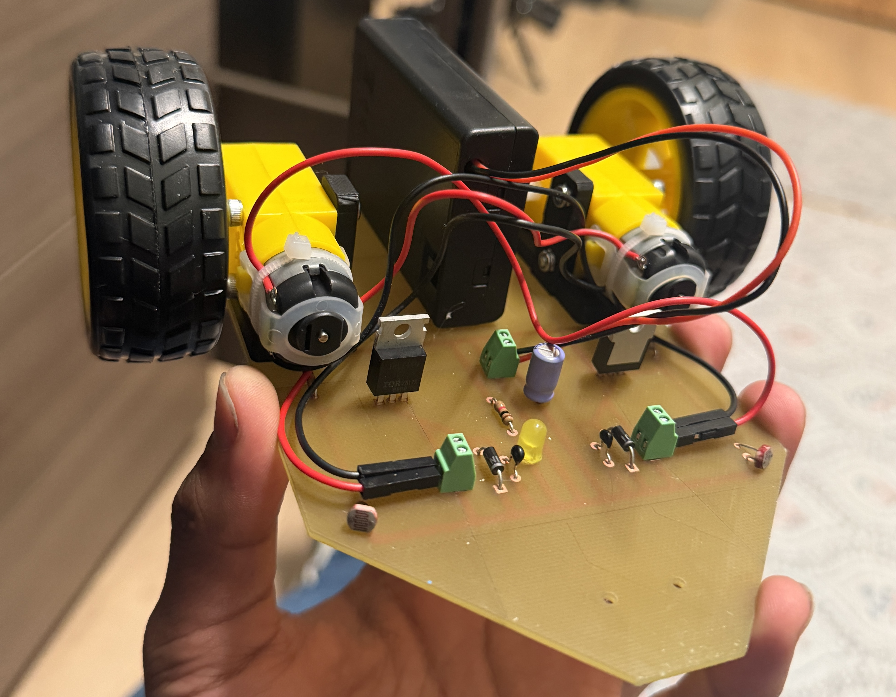

Discovery Project: Braitenberg Light-Seeking Vehicle
The problem
Almost every hardware project I had built before Georgia Tech ran on a microcontroller. When something went wrong, I fixed it in code. For my Discovery Project, I wanted to learn the skills underneath that layer: how to design a circuit that makes decisions on its own, and how to turn that design into a physical printed circuit board.
A Braitenberg vehicle was the perfect challenge. These simple robots show seemingly intelligent behavior, like chasing light, using nothing more than direct connections between sensors and motors. My goal was to build one that seeks out light with zero firmware and no microcontroller, controlled entirely by an analog circuit on a PCB I designed and fabricated myself.
The process
The core of the design is two photoresistors, one on each side of the vehicle. A photoresistor’s resistance drops as light increases, so placing each one in a voltage divider produces a voltage that rises with brightness. That voltage drives the gate of a MOSFET, which controls how much current flows to a motor. More light means a faster motor.
The key decision was cross-coupling: the left sensor drives the right motor, and the right sensor drives the left motor. When light hits the left side, the right motor speeds up and the vehicle turns left, toward the light. Because motor speed scales with brightness, the steering is proportional. The vehicle turns sharply when the light is far to one side and drives straight when the light is directly ahead. I also added flyback diodes across each motor to protect the MOSFETs from the voltage spikes motors produce when they switch off.

After testing the circuit, I laid out a two-layer PCB in KiCad and fabricated it in-house, using the LPKF laser to etch the traces and the ProtoMat to drill the holes. I then soldered the components, continuity-tested every connection, and mounted the board and motors to a chassis with custom 3D-printed PETG mounts. One challenge I faced was tuning the resistor value. It ended up being not sensitive enough to light, which I fixed by de-soldering the old resistor and calculating a better value.
The outcome
The finished vehicle autonomously tracks and drives toward a light source, steering proportionally with no code at all. It behaves best in rooms with some light.

What I learned
This project changed how I think about hardware. Behavior I would normally write as an if-statement emerged from a few resistors, transistors, and the way they were wired together. I learned the full PCB workflow, from schematic to layout to fabrication, and I gained hands-on experience with the Hive’s fabrication tools. These are the same skills I now use on Georgia Tech’s RoboSub team.